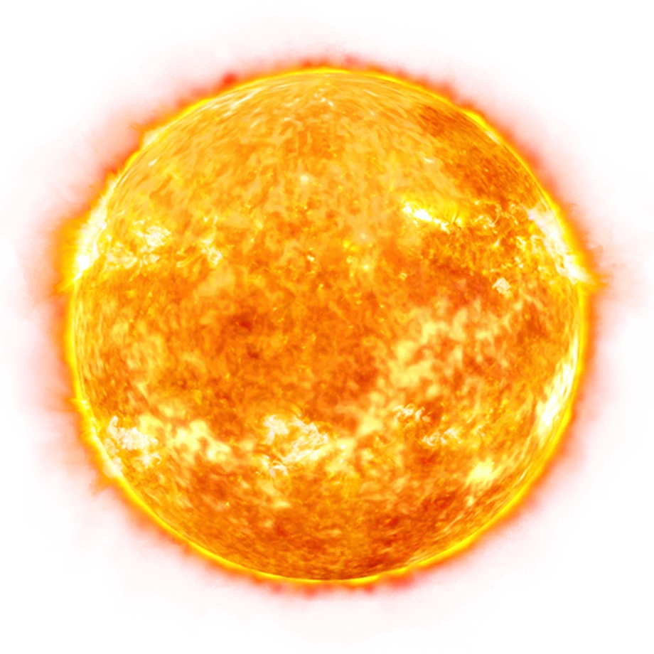

SOLEN
Stjernen i Solsystemet
Solen er en gul dværg (type G2) og udgør centrum af vores solsystem, hvor den indeholder omkring 99,86% af den samlede masse.

Solen er en gul dværg (type G2) og udgør centrum af vores solsystem, hvor den indeholder omkring 99,86% af den samlede masse.